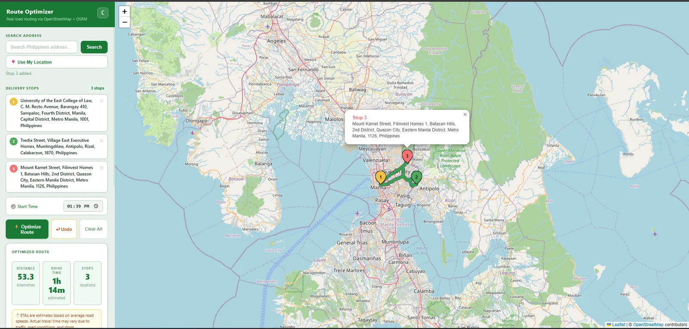
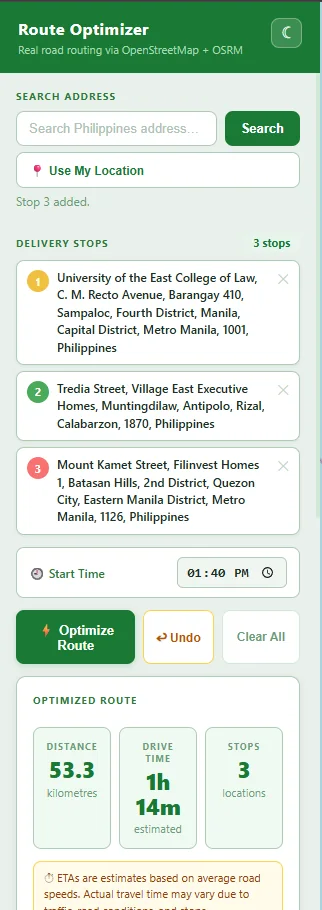
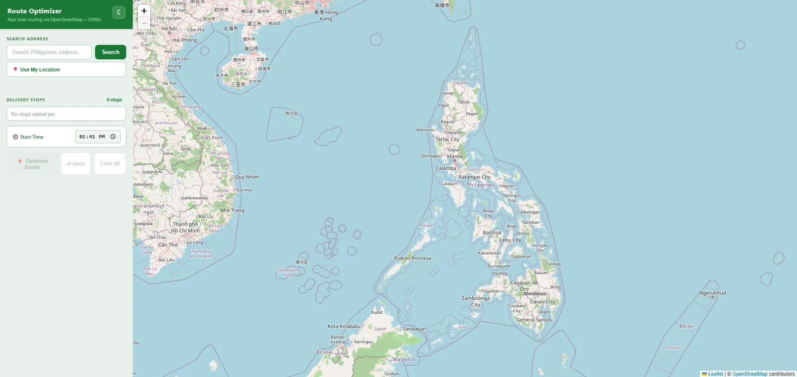
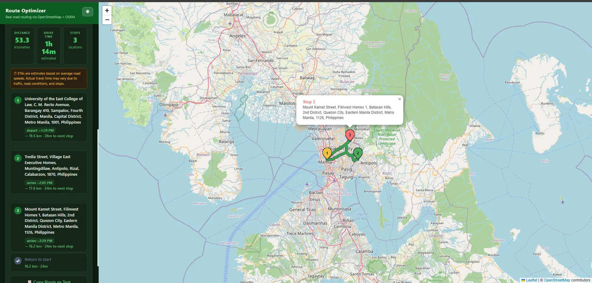
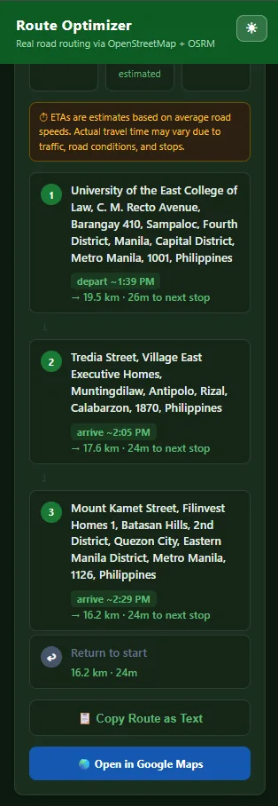

Route Optimizer
Solo buildAdd the stops. It finds the order.


The shortest way through every stop.
A website for drivers and small delivery teams: type in the addresses, and it puts the stops in an efficient order using real road distances, then estimates when you'll arrive at each one.
When the route looks right, one button opens it in Google Maps for turn-by-turn navigation, or copies it as text to send to someone else.
What I did
Three steps from a list to a route.

Search an address or use your location
Search any Philippine address, or drop your current location in as the starting point. Set a start time so the arrival estimates mean something.
Add stops, then optimize
Each stop gets a numbered pin. Optimize Route reorders them and draws the path on real roads, with total distance, drive time and stop count.
- Undo if you change your mind
- Clear All to start a new run

An ETA for every stop
The itinerary lists each stop with its departure or arrival time and the distance and drive time to the next one, including the leg back to the start.

Open in Google Maps
One tap sends the ordered stops to Google Maps for navigation, or copies the route as text.
The whole trip, beside the map.
Search, stops, start time, the route summary and the stop-by-stop itinerary all sit in one panel next to the map, so planning a run never means jumping between screens.

Real road routing
Distances and drive times come from OSRM on OpenStreetMap roads, not straight lines.
Honest estimates
ETAs use average road speeds, and the app says so: traffic and stops can change the real time.
Nothing to install
It is a website: open it, add your stops and plan the run.